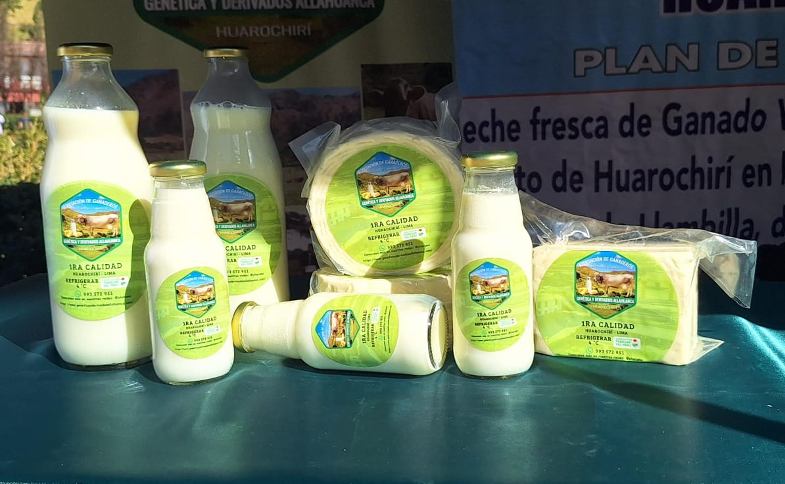
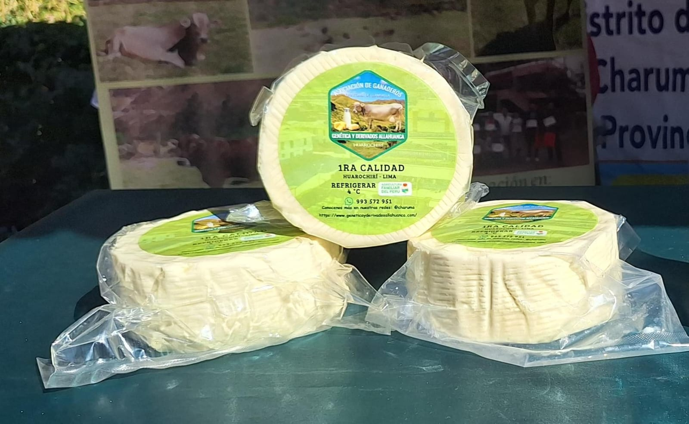
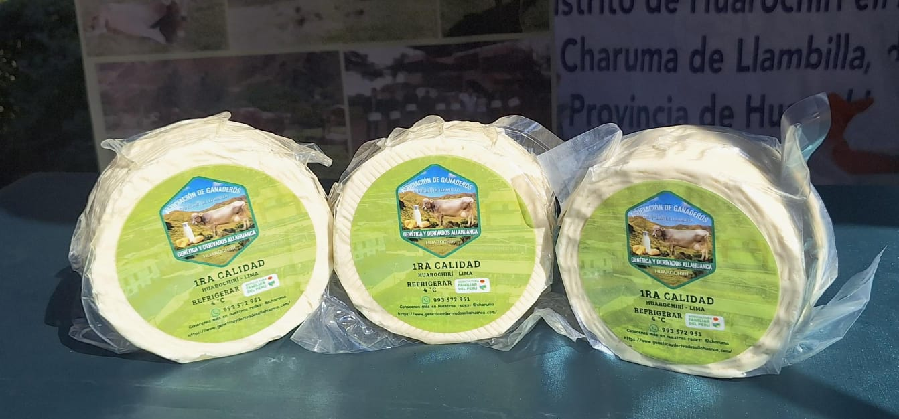
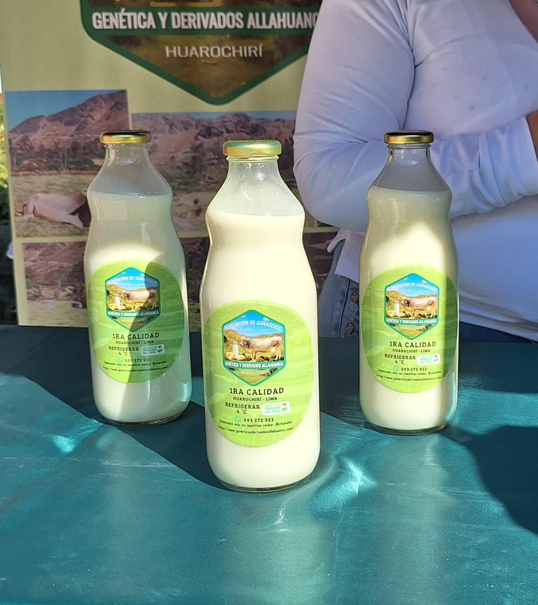
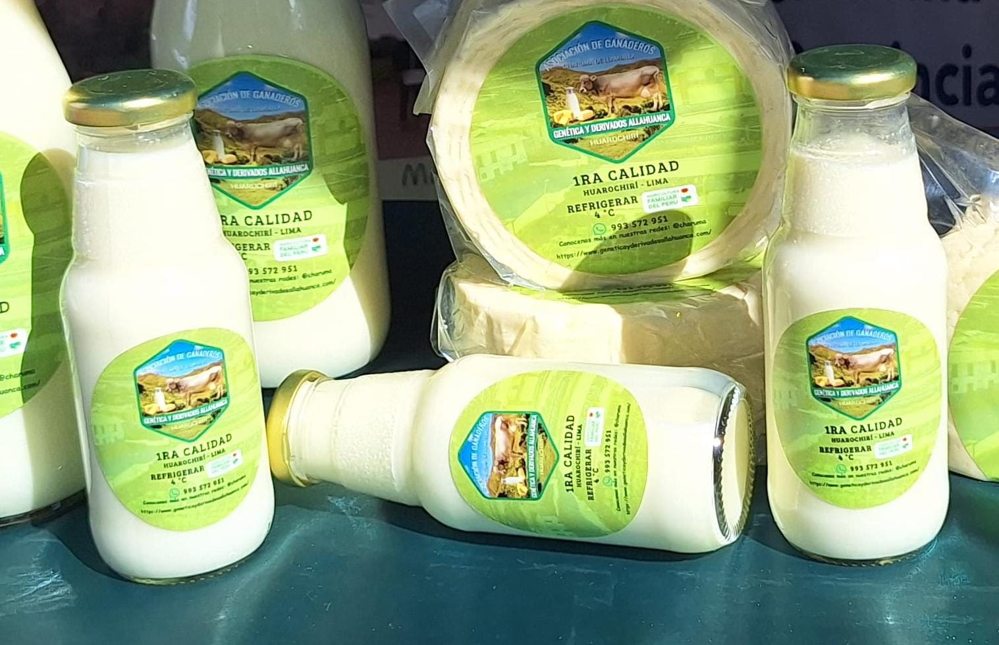

Nuestros productos


Nombre: Queso Fresco Artesanal – 1kg
Descripción:
Hecho artesanalmente con leche natural del día. Su sabor suave y textura cremosa lo hacen perfecto para compartir en familia.
Precio: S/ 18.00 por kilo

Nombre: Queso Fresco Artesanal – 1/2 kg
Descripción:
Elaborado con leche fresca y sin conservantes. Ideal para porciones pequeñas, perfecto para picar o acompañar tus comidas sin excesos.
Precio: S/ 9.00 por kilo

Nombre: Leche Artesanal – 2 litros
Descripción:
Leche fresca 100% natural, sin aditivos ni conservantes. Ideal para desayunos, batidos y recetas caseras.
Precio: S/ 18.00 por litro

Nombre: Leche Artesanal – 1 litro
Descripción:
Leche pura y natural, extraída artesanalmente. Tamaño ideal para el día a día, con todo el sabor de la leche recién ordeñada.
Precio: S/ 18.00 por litro